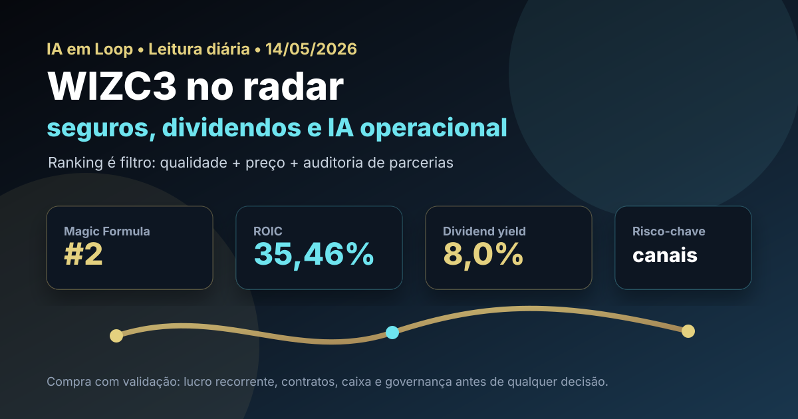

14/05: IA, seguros e WIZC3 no radar da Magic Formula
Depois de PSSA3, o filtro quantitativo aponta para outra empresa ligada ao ecossistema de seguros: WIZC3. A diferença é que aqui o estudo não é só sobre seguradora; é sobre distribuição, parcerias, crédito, dividendos e o uso de IA para ganhar eficiência em um negócio que depende de confiança e escala.

Leitura visual: WIZC3 combina bom ranking, dividendos e risco de execução em parcerias; o papel pede análise de recorrência, governança e dependência de canais.
O sinal do dia
O briefing de 14/05 trouxe um mercado ainda defensivo: Ibovespa pressionado na janela recente, dólar perto de R$ 5, CDI diário elevado e IPCA de abril ainda sensível. Ao mesmo tempo, a agenda de IA segue migrando de “ferramenta barata” para infraestrutura regulada, com discussões sobre segurança, produtividade e impacto no trabalho.
Para o IA em Loop, isso aponta para uma carteira que não dependa apenas de narrativas quentes. Empresas de seguros, bancos, infraestrutura, telecom, energia e serviços financeiros continuam interessantes para estudo quando o investidor quer caixa, recorrência e menos dependência direta de commodity. Mas a régua continua dura: ranking é filtro, não autorização automática de compra.
Leitura IA em Loop: WIZC3 aparece como segunda colocada na Magic Formula de maio. O papel combina retorno alto, valuation aparentemente barato e dividendo relevante — exatamente o tipo de sinal que merece auditoria antes de virar decisão.
Por que WIZC3 hoje?
O post de ontem analisou PSSA3, primeira colocada do ranking. Para não repetir ticker e para testar se o tema “seguros” aparece como setor recorrente no filtro, hoje a lupa vai para WIZC3, segunda colocada no ranking Magic Formula/NED de maio do IA em Loop.
No ranking de maio, WIZC3 aparece com ROIC de 35,46%, earnings yield de 42,19% e score final 6. Em consulta ao Fundamentus feita hoje, a ação aparecia a R$ 7,88, com P/L de 6,49, P/VP de 1,83, dividend yield de 8,0%, ROE de 28,3% e ROIC de 34,9%. Esses números não contam a história completa, mas explicam por que o papel entra no radar.
No noticiário, a Wiz Co abriu 2026 com R$ 59,3 milhões de lucro líquido ajustado no 1T26, segundo Sonho Seguro. O mercado também vem discutindo potencial de dividendos em 2026 e riscos ligados a parcerias e concentração de canais. Essa combinação — lucro, dividendo, dependência de acordos e execução — é o centro da análise.
| Item | Leitura verificada | Implicação |
|---|---|---|
| Ranking | 2º na Magic Formula/NED | Passa no filtro de qualidade e preço sem repetir o ticker de ontem |
| ROIC | 35,46% no ranking; 34,9% no Fundamentus | Indício de negócio leve em capital e rentável |
| Earnings yield | 42,19% no ranking local | Sinal de aparente desconto; exige checagem de lucro recorrente |
| Preço/contexto | R$ 7,88 no Fundamentus | Referência pontual, não preço-alvo |
| Dividendo | 8,0% no Fundamentus | Atrativo se caixa e contratos sustentarem distribuição |
Tese, pontos positivos e riscos
Tese
Wiz atua em distribuição de seguros e produtos financeiros. O modelo pode ser eficiente quando combina base de clientes, tecnologia, parceiros fortes e baixa necessidade de capital físico.
Pontos positivos
Ranking forte, ROIC elevado, P/L baixo, dividendo relevante, lucro ajustado positivo no 1T26 e espaço para IA melhorar qualificação de leads, atendimento, cross-sell e prevenção de churn.
Riscos
Dependência de parcerias, concentração de canais, mudanças regulatórias, renegociação de contratos, competição em distribuição digital e risco de o lucro recente não ser tão recorrente quanto parece.
Contexto macro
Juro alto favorece disciplina de preço e renda financeira, mas também pressiona crédito e múltiplos. Em aversão a risco, o mercado cobra previsibilidade e governança.
Onde a IA entra na história
Em seguradoras e distribuidores, IA não precisa aparecer como produto futurista. Ela pode gerar valor em tarefas menos glamourosas: roteamento de atendimento, recomendação de produto, prevenção de fraude, precificação de risco, leitura de documentos, cobrança, retenção e análise de propensão de compra. Para uma empresa como WIZC3, a pergunta prática é se tecnologia aumenta conversão e margem sem elevar risco operacional.
Esse é o ponto que separa narrativa de fundamento. Se a IA apenas reduz custo administrativo, ótimo. Se aumenta venda cruzada em canais parceiros, melhor ainda. Mas, se o crescimento depende de contrato específico ou de uma parceria vulnerável, o investidor precisa descontar esse risco no preço.
Compra, venda ou espera?
Pelos critérios do IA em Loop, WIZC3 entra como compra somente com validação. O ranking e os múltiplos são fortes demais para ignorar, mas o papel exige leitura dos contratos relevantes, qualidade do lucro, sustentabilidade de dividendos e dependência de canais. Em small/mid caps, preço baixo pode ser oportunidade — ou compensação por risco que o modelo quantitativo não enxerga.
- Gatilho de compra: confirmar recorrência do lucro, contratos saudáveis, dividendos sustentáveis, geração de caixa consistente e ausência de deterioração em canais estratégicos.
- Gatilho de espera: incerteza sobre parcerias, lucro concentrado, notícia de risco contratual relevante ou falta de margem de segurança depois de alta recente.
- Gatilho de venda/redução: perda de canais importantes, queda estrutural de ROIC, dividendo financiado por caixa não recorrente ou piora de governança/percepção de risco.
O que isso muda na carteira
WIZC3 não é substituta automática de PSSA3. Uma é mais diretamente associada a seguros; a outra carrega uma tese de distribuição e parcerias. Para a carteira, isso significa que concentração excessiva no “tema seguros” pode esconder riscos diferentes: sinistralidade de um lado, canal e contrato do outro.
A leitura prática é montar uma fila de auditoria: PSSA3 pela qualidade defensiva, WIZC3 pelo retorno e dividendo, PLPL3 pelo ciclo imobiliário, LEVE3 por autopeças e caixa, e QUAL3 como turnaround de saúde. O ranking ajuda a ordenar a fila, mas a decisão exige conferir balanço, RI, eventos não recorrentes e preço de entrada.
Checklist antes de agir
- Ler release e DFP/ITR mais recentes da Wiz Co, separando lucro recorrente de ajustes.
- Mapear principais parcerias e avaliar risco de concentração ou renegociação.
- Checar fluxo de caixa, payout, dívida, dividendos pagos e guidance.
- Comparar WIZC3 com PSSA3 e outros nomes financeiros para evitar concentração em um único tema.
- Usar R$ 7,88 apenas como fotografia da consulta; preço de execução deve ser validado no home broker/B3.